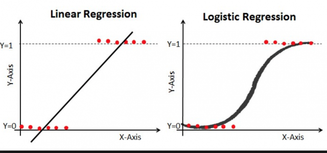
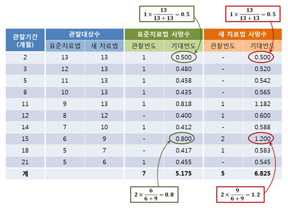

의학연구 위한 기초통계(Table 1), 회귀/생존분석
기본반 1일차 2교시 | 통계이론
2026-07-20
오늘의 목표
- 의학논문 Table 1에 들어가는 기본 비교 검정을 고릅니다.
- 연속형, 범주형, 짝지은 자료에서 어떤 검정을 쓰는지 정리합니다.
- 선형회귀, 로지스틱 회귀, Cox 생존분석의 결과를 해석합니다.
- 기술통계에서 단변량 분석, 다변량 분석으로 이어지는 흐름을 봅니다.
Table 1은 단순 요약표가 아니라 연구대상자의 차이를 보여주는 첫 분석입니다. 그다음 회귀분석과 생존분석으로 보정 전후 결과를 확인합니다.
강의 흐름
01. Table 1 — 기술통계와 그룹 비교 검정
02. 짝지은 자료 — 전후 비교와 paired test
03. 회귀분석 — 연속형, 이분형 outcome의 모델
04. 생존분석 — Kaplan-Meier, log-rank test, Cox model
한 장 요약
| 자료와 비교 | 기본 선택 |
|---|---|
| 연속변수, 2그룹 | 정규분포를 인정하면 t-test, 아니면 Wilcoxon test |
| 연속변수, 3그룹 이상 | 정규분포를 인정하면 one-way ANOVA, 아니면 Kruskal-Wallis ANOVA |
| 범주형 변수 | 샘플 수가 충분하면 Chi-square test, 아니면 Fisher’s exact test |
| 연속형 outcome 보정분석 | Linear regression |
| 이분형 outcome 보정분석 | Logistic regression |
| 시간과 사건 outcome | Kaplan-Meier / Cox proportional hazards model |
기술통계란?
- 평균, 중위수, 분산, 빈도표처럼 데이터를 설명하는 숫자입니다.
- 히스토그램, 상자그림 같은 그래프도 기술통계에 포함됩니다.
- 의학연구에서는 보통 연구대상자를 그룹별로 나누어 Table 1에 제시합니다.

연구의 흐름
- 기술통계로 연구대상자를 보여줍니다.
- 단변량(univariate) 분석으로 그룹 차이를 확인합니다.
- 다변량(multivariate) 분석이나 소그룹(subgroup) 분석으로 다른 변수의 영향을 보정합니다.
간단한 연구는 단변량 분석에서 끝나기도 합니다. Table 1에 필요한 통계를 이해하면 기본적인 의학연구의 출발선을 잡을 수 있습니다.
연속변수의 그룹 비교
2그룹: t-test
2개 그룹의 평균을 비교합니다.
- 각 그룹의 평균과 표준편차가 필요합니다.
- 정규분포를 인정할 수 있을 때 사용합니다.
- 등분산을 가정하지 않는 Welch t-test를 기본으로 생각하면 안전합니다.
등분산 가정은 두 그룹의 분산이 같다고 보는 가정입니다. 특별한 근거가 없다면 굳이 등분산을 가정할 필요가 없습니다.
t-test 예시
성별에 따라 총콜레스테롤(tChol) 평균이 다른지 비교합니다.
R의 t.test()는 기본적으로 Welch t-test를 수행합니다.
t-test와 그래프
2그룹: Wilcoxon test
정규분포를 믿기 어려울 때 2개 그룹의 중위값을 비교합니다.
- 값 자체가 아니라 순위 정보를 이용합니다.
- 비모수검정입니다.
- 결과는 보통 Median [IQR] 형식으로 제시합니다.
정규성검정을 기계적으로 먼저 하는 방식보다 임상적 판단이 더 중요합니다. 키와 몸무게는 정규분포에 가까운 경우가 많고, CRP나 자녀 수는 그렇지 않은 경우가 많습니다.
Wilcoxon test 예시
3그룹 이상: One-way ANOVA
3개 이상 그룹의 평균을 비교합니다.
- Table 1에서는 보통 하나의 p-value를 제시합니다.
- ANOVA는 전체적으로 튀는 그룹이 하나라도 있는지를 봅니다.
- 어떤 그룹끼리 다른지는 사후분석으로 따로 확인합니다.
2그룹에서 등분산을 가정한 t-test와 ANOVA는 같은 결과를 냅니다. 등분산을 가정하지 않는 ANOVA도 사용할 수 있습니다.
ANOVA 예시
3그룹 이상: Kruskal-Wallis ANOVA
정규분포를 믿기 어려울 때 3개 이상 그룹의 중위값을 비교합니다.
- 값 자체가 아니라 순위 정보를 이용합니다.
- 2그룹 Wilcoxon test의 확장으로 이해하면 됩니다.
- Table 1에서는 연속변수의 비모수 비교에 자주 등장합니다.
범주형 변수의 그룹 비교
Chi-square test
두 범주형 변수가 서로 관계가 있는지 확인합니다.
- 예: 혈압약 복용 여부와 당뇨약 복용 여부
- 표본 수가 충분할 때 사용합니다.
- 범주가 2개보다 많아도 사용할 수 있지만, 기본 원리는 같습니다.
Fisher’s exact test
분석 테이블에서 작은 셀이 있으면 Chi-square test가 부정확해질 수 있습니다. 이때 Fisher’s exact test를 씁니다.
Fisher’s exact test만 쓰면 간단해 보이지만, 샘플 수나 그룹 수가 늘면 계산량이 커집니다. 작은 셀이 있는지 확인한 뒤 선택합니다.
짝지은 자료의 비교
Paired t-test
같은 사람에게서 두 번 측정한 연속변수를 비교할 때 사용합니다.
- 예: 수동 혈압계와 자동 혈압계로 같은 사람의 혈압을 측정
- 일반 t-test는 짝 정보를 쓰지 못합니다.
- 각 사람의 차이값을 먼저 구하고 그 평균이 0인지 봅니다.
McNemar test
짝지은 범주형 자료에서 2개 상태의 전후 변화를 비교합니다.
- 예: 약 복용 전후 복통 증상 발생 여부
- Chi-square test는 전후 짝 정보를 쓰지 않습니다.
- McNemar test는 변화가 있는 쌍, 즉 discordant pair를 이용합니다.
3그룹 이상: symmetry test
짝지은 범주형 자료가 3그룹 이상이면 McNemar test의 일반화인 symmetry test를 사용할 수 있습니다.
오늘은 2그룹 전후 비교의 원리를 먼저 잡습니다. 3그룹 이상 paired contingency table은 필요할 때 symmetry test를 확인합니다.
실습 도구
- 웹 애플리케이션: app.zarathu.com/basic
- 5MB 이하의 Excel, CSV, SAS, SPSS 데이터로 Table 1과 회귀분석 결과를 만들 수 있습니다.
- 더 큰 데이터는
jsmoduleR 패키지를 설치해 RStudio Addins에서 실행할 수 있습니다.
수업에서는 원리를 먼저 이해하고, 반복 작업은 웹 앱이나 R 패키지로 재현 가능하게 정리합니다.
Table 1에서 회귀분석으로
Table 1과 단변량 분석은 그룹 차이를 빠르게 보여줍니다.
하지만 의학연구에서는 나이, 성별, 치료군, 기저질환처럼 함께 고려해야 할 변수가 많습니다.
다변량 회귀분석은 한 변수의 효과를 해석할 때 다른 변수들을 함께 보정합니다.
회귀분석
Outcome에 따른 기본 모델
| Outcome | 기본 자료 | 대표 모델 |
|---|---|---|
| 연속형 | 혈압, 검사값, 점수 | Linear regression |
| 사건 여부 | 사망 여부, 재입원 여부 | Logistic regression |
| 시간과 사건 | 생존기간, 추적기간과 사건 | Cox model |
| 드문 사건 수 | 발생 횟수 | Poisson regression |
반복측정 자료나 설문 가중치가 있는 자료는 GEE, marginal Cox, survey GLM처럼 설계에 맞는 모델이 필요합니다.
실습 데이터
Linear regression
연속형 outcome을 설명할 때 사용합니다.
\[ Y = \beta_0 + \beta_1 X + \epsilon \]
- 오차제곱합을 최소로 하는 \(\beta_0\), \(\beta_1\)을 구합니다.
- \(Y\)는 연속형 변수입니다.
- \(X\)는 연속형, 범주형 모두 가능합니다.
단순 선형회귀와 상관분석
\(X\)가 연속형이면 단순 선형회귀는 상관분석과 연결됩니다.
회귀식의 방향을 바꾸면 계수의 의미가 달라집니다. 상관계수는 대칭적이지만 회귀계수는 outcome을 무엇으로 두는지에 따라 달라집니다.
2그룹 비교와 선형회귀
\(X\)가 2개 범주의 변수이면 선형회귀는 평균 비교와 연결됩니다.
2그룹 평균 비교를 회귀식으로 쓰면, 계수는 기준 그룹과 비교 그룹의 평균 차이로 해석됩니다.
3그룹 이상과 더미변수
Multiple regression
여러 변수를 함께 포함합니다.
\[ Y = \beta_0 + \beta_1 X_1 + \beta_2 X_2 + \cdots + \epsilon \]
\(\beta_1\)은 \(X_2\), \(X_3\) 등을 보정했을 때, \(X_1\)이 1 증가하면 \(Y\)가 얼마나 변하는지를 뜻합니다.
논문용 결과 제시
논문에서는 보정 전후 결과를 함께 보여주는 경우가 많습니다.
- Unadjusted: 변수 하나씩 분석합니다.
- Adjusted: 나이, 성별, 치료군 등 주요 공변량을 함께 넣습니다.
- 같은 변수라도 보정 후 계수와 p-value가 달라질 수 있습니다.
Table 1은 연구대상자의 차이를 보여주고, 회귀분석은 그 차이를 고려한 뒤 관심 변수의 효과를 해석합니다.
Logistic regression
이분형 outcome
Outcome이 0/1일 때 사용합니다.
예:
- 사망 여부
- 합병증 발생 여부
- 치료 성공 여부

Odds Ratio
\[ \begin{aligned} P(Y = 1) &= \frac{\exp(\beta_0 + \beta_1 X_1 + \beta_2 X_2 + \cdots)}{1 + \exp(\beta_0 + \beta_1 X_1 + \beta_2 X_2 + \cdots)} \\\\ \ln\left(\frac{p}{1-p}\right) &= \beta_0 + \beta_1 X_1 + \beta_2 X_2 + \cdots \end{aligned} \]
\(X_1\)이 1 증가할 때 odds는 \(\exp(\beta_1)\)배가 됩니다. 이것이 Odds Ratio(OR)입니다.
Logistic regression 예시
로지스틱 회귀의 계수는 log-odds 단위입니다. 논문에서는 보통 계수를 그대로 쓰기보다 OR과 95% 신뢰구간으로 제시합니다.
생존분석
Time-to-event data
생존분석은 시간과 사건 발생 여부를 함께 다룹니다.
- 예: 수술 후 사망까지의 시간
- 예: 치료 후 재발까지의 시간
- 추적 종료 시점까지 사건이 없으면 중도절단(censoring)으로 기록합니다.
Kaplan-Meier plot
Kaplan-Meier 곡선은 시간에 따른 생존확률을 보여줍니다.
Table 1 또는 결과표에서는 그룹별 생존곡선과 함께 log-rank test p-value를 제시하는 경우가 많습니다.
생존확률 계산
\[ \begin{aligned} P(t) &= \frac{t \text{ 구간 생존수}}{t \text{ 시점 관찰대상 수}} \\\\ S(t) &= S(t-1) \times P(t) \end{aligned} \]

Log-rank test
Log-rank test는 구간별 기대 사건 수와 관찰 사건 수를 비교한 뒤 합쳐서 검정합니다.
구간별 발생 양상이 비슷하다는 가정이 깔려 있습니다. 이 흐름은 Cox model의 비례위험 가정과 연결됩니다.
Cox proportional hazards model
Cox model은 Hazard Ratio(HR)를 평가합니다.
\[ \begin{aligned} h(t) &= h_0(t)\exp(\beta_1 X_1 + \beta_2 X_2 + \cdots) \end{aligned} \]
\(X_1\)이 1 증가할 때 hazard는 \(\exp(\beta_1)\)배가 됩니다. 이것이 HR입니다.
Cox model 예시
HR이 1보다 크면 사건 발생 위험이 높고, 1보다 작으면 낮다고 해석합니다. 단, 연구 설계와 변수 정의를 먼저 확인해야 합니다.
생존분석에서 주의할 점
- Cox model은 시간 구간별 위험비가 크게 달라지지 않는다는 비례위험 가정을 둡니다.
- 생존곡선이 심하게 교차하면 HR 하나로 요약하기 어렵습니다.
- Index date 이후에 측정된 검사값이나 약물 사용은 일반 공변량처럼 넣으면 안 됩니다.
- 추적 중 변하는 변수는 time-dependent covariate로 다뤄야 합니다.
Landmark analysis
Landmark analysis는 특정 시점을 기준으로 대상을 다시 정의한 뒤 그 이후의 사건을 분석합니다.
- 추적 중 상태가 바뀌는 상황에서 사용할 수 있습니다.
- 기준 시점 이전 정보와 이후 사건을 섞어 해석하지 않도록 돕습니다.

Time-dependent Cox 예시
시간 구간을 나누어 분석해야 할 때는 자료 구조를 바꿉니다.
이 부분은 생존분석 심화 주제입니다. 오늘은 생존자료에서 시간과 사건을 함께 다룬다는 점, Cox model 결과는 HR로 읽는다는 점을 먼저 잡습니다.
정리
연속형, 범주형, 시간-사건 자료는 각각 다른 통계방법을 요구합니다. 먼저 outcome의 형태를 정하고, 그다음 비교 구조와 보정 변수를 결정합니다.
Table 1
연구대상자를 그룹별로 요약하고 기본 차이를 확인합니다.
Regression
다른 변수를 보정한 뒤 관심 변수의 효과를 해석합니다.
Survival
시간과 사건을 함께 보며 KM, log-rank, Cox model을 사용합니다.
Zarathu Co., Ltd.